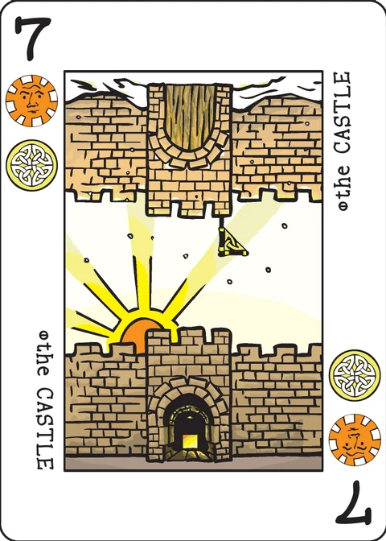

Jacynth
a territory control game for 2-3 players, plus a solitaire variant
This app plays the solitaire variant; the multi-player rules below are included in full for reference.
Jacynth is among the oldest cities, and a map of its streets is a record of history. It is a haphazard maze of overlapping interests and neighborhoods, with intricate social bonds tying one block to the next. You could control the city if you could control a nexus in that maze of ancient intrigue, but first you would have to find it.
Components: In addition to a Decktet, Jacynth requires four influence tokens for each player. You might use anything that can be placed on a card to indicate which player has influence over it: chips, stones, beads, coins, meeples.
Object of the game: During a hand of Jacynth, cards are laid out to form a six-by-six grid that represents the city. Players claim areas by placing influence tokens on cards, aiming to control more of the city than their opponents.
Districts
A district is a group of cards that share a suit symbol and are adjacent to one another. For example, three cards that have Sun suits laid in a row, one next to another, would form a district. The cards in a district need not be in a straight line, but each card must share an edge with another card in the district. Districts do not connect across diagonals or across open spaces that do not have cards in them yet.
A number card (since it has two suits) may be part of two separate districts; one for each suit.
A player controls a district when they have an influence token on a card in that district.
You cannot place an influence token in a district already controlled by an opponent, but it is possible that subsequent card play will connect what had been two separate districts. If this happens, then the player with whose token is on the higher ranked card controls the district. Crowns beat 9s; 2s beat Aces.
If you have more than one token in a district, the card ranks do not add together; only the highest ranked card counts for district control.
Example of control: Aaron has a token on the 8 of Moons and Suns. Beryl has a token on the Crown of Moons. By a chain of Moon cards, the two cards become part of the same district. The Crown is the higher ranked card, so Beryl controls the Moon district. Beryl's token is not on a card Suns card, so Aaron still controls the Sun district that includes the 8.
Set up
The dealer shuffles the deck, deals each player a three card hand, and deals cards face up to form the initial play area. There are three possible initial arrangements; with each, further cards are played around them so as to form a six-by-six grid. (An illustration of the three starting arrangements is on the wiki.)
The Razeway is the simplest of the starting boards. Since there are no initial gaps between cards, it is easy to visualize the grid and recognize the boundary of the play area. The Towers the Old City allow for more strategic and aggressive play, at the cost of making the grid less obvious. (See below for a discussion of some ways to keep the grid straight.)
Each player starts with four influence tokens.
Game play
Players take turns, starting with the player on the dealer's left.
On your turn, you begin by adding a card to the city. Then you may place an influence token, although you are not required to do so. Finally, draw a card.
Here are the details on all that:
Explore the city. Select a card from your hand and play it face up on the table, adjacent to one of the cards already in play. You must place it within the grid of the city.
Exert influence. If you have influence tokens remaining, you may place one on a card in play.
You may not place an influence token on a card that is part of a district controlled by another player. This restriction applies even if the card has another suit that also makes it part of second district, where only one of the districts in controlled. You may, however, place an influence token on a card that is part of a district you already control. This can be a good idea if the card is part of an uncontrolled second district.
You may not place more than one influence token per turn. You may place influence on the card you added this turn or on another card, even on one of the starting cards.
Draw a card. Drawing a card ends your turn.
After the deck is depleted, play continues until thirty-six cards have been played and the final player's turn is complete.
Scoring
At the end of the game, you score points for each district you control: One point for each card that comprises the district.
There is no bonus or special advantage for having more than one influence token in a district, and no effect from unplaced influence tokens remaining at the end of the hand.
Note that a district may consist of a single card, if that card is not adjacent to any that share a suit with it. A single isolated Ace or Crown would be worth one point to a player who had a token on it. A single isolated number card comprises two single card districts, one for each suit, and would be worth two points.
Keeping the city straight
It can be hard to keep track of the grid, especially when playing with the Towers or the Old City starting boards. Here are some options.
- Play on a surface with lines, like a tiled floor or plaid table cloth.
- Put spare cards card face down in key places. For example, four cards in the center are enough to suggest the rest of the grid with the Towers. You can use extended deck cards that you haven't shuffled into the deck.
- Print out a Jacynth game mat. The file includes instructions for putting it
together.
- Jacynth game mat (PDF)
The extended deck
If you want to spice up the game, you can add in the Excuse, the Pawns, the Courts, or some combination of these. Just shuffle them in at the beginning of the game.
The Excuse: The Excuse is a block card. It is not part of any adjacent districts, and no district may pass through it. You may not place influence tokens on the Excuse.
Pawns and Courts: These three-suited cards may be part of three different districts. You may not place influence tokens on a Pawn or Court.
Solitaire
As a solitaire, Jacynth is played against the city in an attempt to control as much as possible. The rules for the standard game apply, with the following changes:
- The city is a 4x4 grid. (If you are using the game mat, use the Towers starting configuration and place subsequent cards only on the mat itself.)
- Start by dealing a card into each corner of the city. Put your first influence token on one of the starting cards.
- When you play a number card (rank 2-9), immediately flip over the top card of the deck.1 If the flipped card is an Ace, Crown, Pawn or Court then discard it and place your card as normal. If the flipped card is a number card of equal or higher rank than your card, then discard your card and place the flipped card in the chosen spot instead.
- When you play your fourth card (so that there are a total of eight cards in the city) you must place your second influence token if you have not done so already.
- When you play your eighth card (so that there are a total of twelve cards in the city) you must place your third influence token if you have not done so already.
- You may place your fourth token at any time.
- Your final score in the solitaire game determines your rank in the hierarchy:
| 10 or fewer points | Outsider |
| 11-14 | Respectable citizen |
| 15-18 | Aspiring noble |
| 19-23 | Favoured courtier |
| 24-26 | Power broker |
| 27-29 | Mogul |
| 30 or more | Prince of the city |
1 The wiki describes the flip only for an Ace, Crown, Pawn or Court, and for a number card of equal or higher rank; it leaves the remaining case unstated. The natural reading — and the one this app uses — is that if the flipped card is a number card of lower rank than yours, the flipped card is discarded and your card is placed in the chosen spot as normal.
Credits
Design: P.D. Magnus
Playtesting: Cristyn Magnus, Carl Olson, Dean Howard
Solitaire variant: Jack Neal
The city of Jacinth and the Razeway are original creations of Ilya Farber.
Links
Jacynth was designed by P.D. Magnus, with a solitaire variant by Jack Neal. These rules are copied from the Jacynth page of the Decktet wiki (page revision 28, 12 May 2020) so that they can be read offline, and are used under the wiki's CC BY-NC-SA 3.0 licence. The cards themselves are by P.D. Magnus, 2008–2010, same licence.
Further reading: Jacynth at BGG